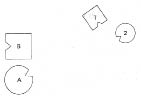
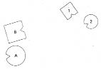
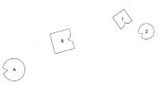
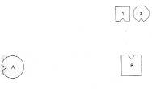

HELLINGER Kalan zamanı değerlendirelim. Bir kişiyi daha alalım, gerçekten hasta olan birini. En fazla bu şekilde öğrendiğimiz için en fazla yardımı dokunan da budur.
HERMANN Ben gelmek istiyorum. İlik kanseriyim.
HELLINGER O halde seni alıyorum, çünkü burada akut bir durum söz konusu. Yanıma otur. Ne zamandır hastasın?
HERMANN Bir yıldan beri.
HELLINGER Bu süre boyunca nasıl bir tedavi gördün?
HERMANN Kemoterapi. Ardından çeşitli psikoterapi gruplarına katıldım.
HELLINGER Evli misin?
HERMANN Evet.
HELLINGER Çocuğun var mı?
HERMANN Hayır.
HELLINGER Çocuk istememenizin özel bir nedeni var mı?
HERMANN İstedik ama olmadı.
HELLINGER Köken ailende özel bir yaşantı var mı?
HERMANN Tek aklıma gelen, babamın erkek kardeşleriyle ilişkisinin çok kötü olduğu. Aynı yerde çalışıyorlardı, ayrıldılar, bir daha da hiç görüşmediler.
HELLINGER Babanın babası ne olmuş?
HERMANN Onu hiç tanımadım. Babam da pek söz etmez. Bilinmedik bir konu benim için.
HELLINGER Babanın ondan hiç söz etmemesi tuhaf. Köken sistemini diziyoruz şimdi: Babanı, anneni, sen ve kardeşlerini. Kaç kardeşin var?
HERMANN Benden küçük bir kız kardeşim.
HELLINGER Ebeveyninden biri daha önceden evlilik ya da ciddi bir ilişki yaşamış mı?
HERMANN Bildiğim bir şey yok. Sanmıyorum.
HELLINGER Ölen ya da ölü doğan bir çocuk?
HERMANN Hayır, olmadı.
1. Resim

B Baba
A Anne
1 İlk çocuk, oğlan (=Hermann)
2 İkinci çocuk, kız
HELLINGER Baba nasıl?
BABA Eh, hayatta olduğum söylenebilir.
Grupta gülüşmeler
HELLINGER Nasılsın?
BABA Çok bağsız, çok… hıçkırır.
HELLINGER gruba Gitmek zorunda. Bunu görüyor musunuz? Gitmek zorunda. Soru, kimi izlemek durumunda olduğu? –Anne nasıl?
ANNE Böyle harika çocuklarım olması çok heyecanlandırıyor beni ama biraz uzağım onlardan. Kocam kalabilir de, gidebilir de.
HELLINGER gruba Sevgi değil bu, farkında mısınız? Böyle bir şey olduğunda benim tahminim daha çok, annenin gitmek zorunda olduğu, babanınsa bunu onun için yaptığıdır. Buna çok sık rastlanır: Aslında kadın gitmek zorundadır, erkek onun yerine gider. Buna da sevgi filan denir. Değil mi? Kadının yüz ifadesini görüyor musunuz? Kötü biri. Erkek gittiğinde zafer kazanmış olacak. Gizleyemiyor bunu. –Temsilcisi elbette iyi bir kadın ve bunlarla hiçbir ilgisi yok. Ama burada kötü birini temsil ediyor. Böyle bir dizimde, yaşananlara kendini bırakmışsa bunu yönlendiremez de.
BABA Peki nasıl oluyor da ben hiçbir şey hissetmiyorum?
HELLINGER Senin yüzünü, kadınınsa sırtını aileye çevirelim, bakalım nasıl olacak.
2. Resim

BABA kadına Ters dönelim (erkeğin sırtı, kadının yüzü aileye çevrili olacak şekilde).
HELLINGER Ciddiyetini koru, yoksa Hermann için dizimi doğru yapamayız. –Böylesi çocuklar için nasıl?
İLK ÇOCUK Arkasını yeniden dönmesine karşı çıkarım.
HELLINGER Doğru. –Kız nasıl?
İKİNCİ ÇOCUK Başlangıçta asıl çifti erkek kardeşimle benim oluşturduğumuz duygusu vardı içimde.
HELLINGER Kadın şimdi nasıl? Daha mı iyi, daha mı kötü?
ANNE Henüz dışlanmak istemiyorum. Çocuklarımla birlikte olmak ve yüzümü dönmek istiyorum.
HELLINGER Az önce nereye bakıyordun?
ANNE Erkek tarafına.
HELLINGER Hayır, hayır! Kimdi karşındaki? Kim o? Neye bakıyorsun?
ANNE Kendi hayatıma, kendi öyküme.
HELLINGER Lafı güzaf!
HELLINGER Hermann’a Gitmek isterken annenin baktığı kim? Kimi izliyor?
HERMANN Kız kardeşi üç yıl önce öldü, ama…
HELLINGER Hayır bu yeterli değil.
HERMANN Birkaç yıl önce annesi öldü.
HELLINGER Hayır, ağır bir şey olmalı.
Hellinger anneyi aileden uzaklaştırır.
3. Resim

HELLINGER Orada olmak nasıl senin için? Daha mı iyi, daha mı kötü?
ANNE Daha iyi.
HELLINGER Doğru. Gerçek bu. –Erkek şimdi nasıl?
BABA Yüzümü aileye çevirdiğimde birden bir ağırlık ve acı hissettim.
HELLINGER Çocukların karşısına geç, çocuklar da babayla karşı karşıya dursun.
4. Resim

HELLINGER Hermann’a Resmin içinde kendi yerini al artık. –Nasıl senin için?
HERMANN Alışılmadık geldi. Son derece alışılmadık.
HELLINGER Babanın soluna geç ve yüzüne bak –sevgiyle. Başını çevir ve bak ona. Babana nasıl seslenirdin?
HERMANN Babacığım.
HELLINGER “Sevgili babacığım!” de.
HERMANN Sevgili babacığım!
HELLINGER “Lütfen kal!”
HERMANN Lütfen kal!
HELLINGER “Ve seninle kaldığımda beni kutsa.”
HERMANN Seninle kaldığımda beni kutsa.
Uzun bir sessizlik olur.
HELLINGER Doğru cümle ne olurdu?
HERMANN Öfkeli olduğum.
HELLINGER Ona “Bunu senin için yapıyorum” de.
HERMANN Bunu senin için yapıyorum.
HELLINGER Yüksek sesle.
HERMANN Bunu senin için yapıyorum. Cümleyi öfkeyle söyler.
HELLINGER Daha yüksek.
HERMANN Bunu senin için yapıyorum.
Uzun bir sessizlik.
HELLINGER gruba Ölecek. Kilitlenmeden çıkmıyor.
Hermann’a Öfken senin için daha önemli. –Babana ne yaptın?
HERMANN Dik başlı bir ifadeyle Bilmiyorum.
HELLINGER Bir şey yaptın mı ona?
HERMANN Bildiğim kadarıyla hayır.
HELLINGER Hor gördün mü?
HERMANN Kararlı bir sesle Evet.
HELLINGER İşte bu.
HERMANN O beni…
HELLINGER Babanın ne yapmış olduğunun burada hiçbir önemi yok. Belirleyici olan, senin yaptığın. –Kız kardeşinin yanına dön.
Gruba Burada yapılması gereken, diz çökerek babasının önünde eğilmesi olurdu. Bunu başaramıyor. Eğilmektense ölmeyi yeğliyor.
Hermann’a Doğru mu?
HERMANN Hayır!
HELLINGER Yapmak istiyor musun?
HERMANN Denemek istiyorum.
HELLINGER Denemek değil! Yapmak istiyor musun?
HERMANN Kararlı bir sesle Evet.
HELLINGER Güzel, o halde seninle birlikte yaparak sana yardım edeceğim. –Diz çök, iyice eğil, iyice, ellerini ileriye doğru uzat, içleri yukarı baksın. Tamam! Derin nefes al! “Babacığım!” de.
HERMANN Babacığım!
HELLINGER “Seni onurlandırıyorum.”
HERMANN Seni onurlandırıyorum.
HELLINGER Gayet sakin bir şekilde tekrarla.
HERMANN Babacığım, seni onurlandırıyorum.
HELLINGER Tamam. Cümle bu. Derin nefes al. “Babacığım!”
HERMANN Babacığım!
HELLINGER “Seni onurlandırıyorum.”
HERMANN Seni onurlandırıyorum.
HELLINGER “Seni babam olarak sayıyorum”…
HERMANN Seni babam olarak sayıyorum…
HELLINGER “…Ve bana oğlun olarak sahip olabilirsin.”
HERMANN …ve bana oğlun olarak sahip olabilirsin.
HELLINGER “Seni onurlandırıyorum.”
HERMANN Seni onurlandırıyorum.
HELLINGER Biraz daha böyle kal, çok sakin bir şekilde, derin nefes alıp ver. Gayet gevşek ol! İşte böyle! Sonra, senin için doğru olduğunu hissettiğin an kalk ve yerine dön.
Uzun bir sessizliğin ardından Kız kardeşinin yanına dön şimdi ve babana bak. Başını hafifçe eğ, saygı ifadesi alır gibi, sonra yeniden doğrul. Babaya nasıl geliyor bu?
BABA Bunun olduğuna inanmakta güçlük çekiyorum, yani…
HELLINGER İnanmakta güçlük çektiğin ne? Seni gerçekten onurlandırması mı?
BABA Evet.
HELLINGER Evet, olabilir.
Gruba Burada hile olmaz. Fark ediyor musunuz? Hile yapılamaz burada. –Kansere ilişkin varsayımım, çoğu kanser hastasının ebeveynleri, anne ya da babaları önünde eğilmektense ölmeyi yeğlediği yolunda. Ölmeyi yeğliyorlar! Bu nedenle de çoğu bu şekilde dikleniyor. Eğilmek yerine dik bir başla yürüyorlar.
Hermann’a Babana bak bir kez daha ve “Lütfen” de.
HERMANN Lütfen.
HELLINGER “Bana biraz daha zaman ver.”
HERMANN Bana biraz daha zaman ver.
HELLINGER “Lütfen…”
HERMANN Lütfen…
HELLINGER “…bana biraz daha zaman ver.”
HERMANN …bana biraz daha zaman ver.
HELLINGER Şimdi ruhuna bırak kendini.
Gruba Babaya yönelemiyor henüz. Onu kucaklayamazdı da. Rol yapmak olurdu ki bu da olmaz.
HELLINGER Hermann’a Tamam, böylece bırakıyorum. Ben de senin ruhuna güveniyorum. Güvenebilir miyim?
HERMANN Evet. Gülümser.
HELLINGER Hayır. Gülümsemen bana güvenemeyeceğimi söylüyor.
HERMANN Güvenebilirsin!
HELLINGER Bak, seninle tartışmak değil, yardım etmek istiyorum. Bundan ötürü de her işareti ciddiye alıyorum. Yoksa seninle oyun oynarım, bu da kötü olur. Böyle bir hastalıkta oyunun yeri yoktur. –Tamam, bu kadar.
HERMANN Teşekkür ederim.
HELLINGER Gruba Dehşet üzerine söylemek istediğim bir şey var. Dehşet taşıyıcıdır. Ancak onunla uyum içinde olan ve ona rıza gösteren bu dünyayla uyum içindedir. Kimi zaman, kendisiyle uyum içinde olana sevginin getirebileceğinden çok daha fazla iyilik getirir. Bundan ötürü terapist kötü olanla da uyum içindedir ve bu her ne ise ona rıza gösterir. Hermann böyle kalıp ölecek olursa ona rıza gösterebilirim. Korkutucu olanla da uyum içindeyimdir. Ve kötüyle uyum içinde olduğumdan ben onu, o da beni ciddiye alabilir. Hastalığını da ciddiye alabilir. Ancak o zaman bir kararla karşı karşıyadır. Daha önce değil!
KATILIMCI Böyle bir çalışma nasıl sürdürülebilirdi?
HELLINGER Sürdürülemez. Hepsi buydu!
KATILIMCI Demek istediğim, belki gelecek hafta ya da…
HELLINGER Hayır. Hepsi buydu. Yapılması gerekeni anladı. Bu noktadan sonra devam etmeyi istemek, az önce yapılmış olanı gülünç bir hale getirirdi. Yapılabilecek olan burada yapılandan ibaret.
KATILIMCI KADIN Babanın değil de annenin söz konusu olduğu fikrine nasıl vardınız? Başlangıçta durum tersiydi.
HELLINGER Yüzünden okudum, ardından da sınadım. Aslında geçmişte de böyle bir şeyin olduğunu deneyimlemiştim. Burada da bunun böyle olduğu görüldü.
BAŞKA BİR KATILIMCI KADIN Böyle bir dizimde insanların kendileriyle hiçbir ilgisi olmayan şeyler hissedebilmesi olgusunu nasıl açıklıyorsunuz?
HELLINGER Ben kendime hiçbir şeyin açıklamasını yapmıyorum. Bunun böyle olduğunu, böyle geliştiğini, sınanabileceğini, bir aile dizimine temsilci olarak katılanların bu ailede olup biteni gerçekten algılayabileceklerini görüyorum ve bu, çalışmam için bana yeterli. –Pekâlâ, ara vermeden önce bir vaka daha alalım mı?
ÇOĞU KATILIMCI Evet.